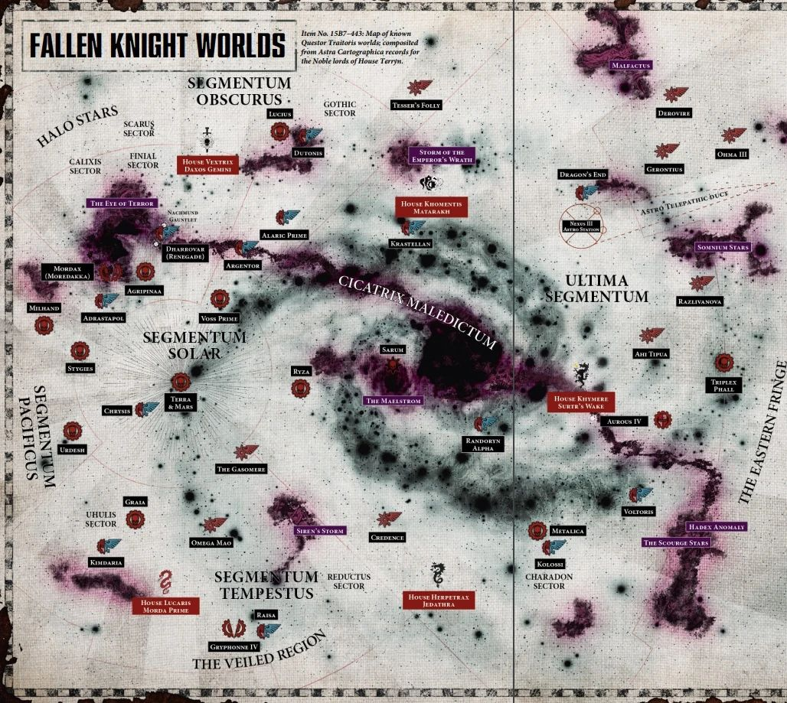

Knight world
| Knight world | |
|---|---|
| Class of Imperial world | |
 Alaric Prime, Knight world of House Terryn Artwork © Games Workshop | |
| Administratum class | Knight world; a form of feudal world[a] |
| Typical tithe | Paid in military service by the Knight houses |
| Ruler | The High Monarch or Princeps of the ruling house |
| Population | Millions to billions of serfs, under a small noble class |
| Allegiance | Imperium of Mankind (Questor Imperialis) or Adeptus Mechanicus (Questor Mechanicus); fallen worlds to Chaos |
| Examples | Alaric Prime (Terryn), Voltoris (Griffith), Kimdaria (Raven), Hetrax (Cadmus), Chrysis (Krast), Molech (formerly) |
A Knight world is a class of planet of the Imperium of Mankind ruled by noble houses that pilot the Imperial Knights, towering war machines bonded to their pilots through the Throne Mechanicum. Most Knight worlds are feudal societies in which a small aristocracy holds land and power in return for defending the serfs who work it, and in structure and custom they resemble the realms of the European Middle Ages of old Terra. Their tithe is not goods but military service, owed either to the Imperium or to the Adeptus Mechanicus.[1][2]
The first Knight worlds were colonies of the Dark Age of Technology, settled by the Long March fleets of Terra, whose colonists were issued with Standard Template Construct schematics for the Knight suits that protected them from predators and hostile aliens. The pilots became a hereditary nobility, and in the Age of Strife their conservatism helped many worlds to survive while others burned. The Great Crusade (from 798.M30) rediscovered the surviving worlds, and the Mechanicum of Mars won the right to exploit them, so that Knight worlds are now bound by oath either to the Emperor (the Questor Imperialis) or to Mars (the Questor Mechanicus).[1][2][3]
In the Horus Heresy the Knight worlds were divided. House Devine of Molech betrayed the loyalists in 009.M31, and the houses that sided with Horus became the first Chaos Knights. In the Era Indomitus the Great Rift cut many Knight worlds off in the Imperium Nihilus, and some have fallen to Chaos. The loyal houses, meanwhile, have lit their watchfires again and sent lances of Knights to the aid of their neighbours.[1][4]
Origins
[edit]The Age of Technology
[edit]The first Knight worlds were founded before the discovery of the Warp-drive in the 18th millennium, when scouts from Terra sought planets to serve as agricultural worlds and mining colonies for the growing human population. When a suitable world was found, a vast sublight ship was dispatched to settle it. These were the "Long March" fleets, named for their decades-long voyage. A colony ship carried thousands of settlers and landed on arrival, to be cannibalised at once for the materials of their first settlements, since there was no hope of return. The Knight worlds had therefore been settled for thousands of years when the Imperium was founded.[1][2]
The struggle for survival on many worlds was bitter. Some settlers were hunted by predators or attacked by native aliens, and on others the weather or the air made life outside the domed habitats almost impossible. The colony fleets had anticipated this and carried Standard Template Construct databases and fabrication plants for powered suits of exoarmour. The pilots, shielded by a hard shell of plasteel and armed with military weapons, could cross the most dangerous country, and the settlers named them Knights after the armoured protectors of Terran legend.[2][5]
The suits were joined to their pilots by the Throne Mechanicum, a mind-impulse control platform that links the pilot to the machine. In a few generations the elite who piloted them became knightly houses. The plasteel of the early suits was replaced by ornate adamantium armour that showed the rank of its wearer, and the humbler work that the Knights had done, such as felling forests with reaper chainswords or breaking ore with battle cannons, was given to lesser men. The Nobles lived in tall strongholds and ruled the settlers they had once only protected. The Ritual of Becoming, in which a young noble was bonded to the Throne Mechanicum, was dangerous, and Imperial records say that many were broken by it.[2][1]
The Age of Strife
[edit]The Age of Technology ended in a pandemic of wars, as the first human psykers appeared and thinking machines, remembered as the Men of Iron, were widely used. By the 25th millennium the Warp storms raised by the birth of Slaanesh had isolated most human colonies. The houses of the Knight worlds had mostly shunned both psykers and thinking machines, preferring the ways of the past, and so many worlds were sidelined by the wars that destroyed their neighbours. Cut off, they were forgotten, and their warrior aristocracies cemented their power, encouraged by the mental conditioning of the Throne Mechanicum, and imposed neo-feudal systems on their homeworlds.[2][1]
The Knight worlds were also defended against the horrors of the age. Their records speak of Knights fighting gigantic Warp entities and wading through tides of daemons. These worlds were not unscathed, and none emerged without scars, but the surviving houses developed a society of fealty, honour and duty. A house could field many men-at-arms and kept artificers who maintained the suits as best they could. On Higroxias, for example, the three major houses compete once in ten years in the Honour Games, whose winner rules the governing council for the next decade.[2]
Rediscovery
[edit]The Great Crusade
[edit]The Great Crusade (c. 798.M30–005.M31) brought the Imperium of Mankind back to the stars. The Rogue Trader Militant Jeffers rediscovered the Knight world of Chrysis in c. 850.M30[b] and reported its warriors to the Administratum, which then looked for the others. Of the many thousands of Knight worlds at the height of the Dark Age of Technology, only a few hundred survived. Each is built around a sprawling walled stronghold, often on the site of the first settlement and built around the hull of the Long March colony ship, and each is ringed by farms and mines.[2][1]
The Mechanicum was in no hurry to share the discovery. The Imperial institutions of the Crusade competed for years to control the Knight worlds, until the Mechanicum of Mars won the right to exploit them, under the terms of the Treaty of Mars. The tech-priests hoped to secure the archeotech of the Knight worlds and saw the use of the houses as warriors. They made the houses dependent on Mars by teaching the local artificers the skills of the Cult Mechanicus, and for that reason nearly all suits of Knight armour bear its mark as a reminder of a debt to Mars. It was Knight Taymon Verticorda of House Taranis who was the first of the Mechanicum to meet the Emperor on Mars.[2][6][7]
Questor Imperialis and Questor Mechanicus
[edit]Knight worlds that swore to the Emperor became the Questor Imperialis. They are ruled by one or more noble houses with their own heraldry, and each Knight owes allegiance to a baron, or the local equivalent such as a marshal, countess, seneschal or marchioness, who in turn owes allegiance to the High Monarch of the world. On some worlds one house rules the planet, and these Great Houses include House Terryn, House Griffith, House Hawkshroud and House Cadmus.[2][1]
Knight worlds bound to Mars became the Questor Mechanicus, and are linked to a nearby Forge world, whose Titan Legions they fight beside in return for the technology of the Adeptus Mechanicus. Many Forge worlds became the hub of a small domain made up of the forge and its Knight worlds. The relationship is not easy, especially between the Knights and the Sacristans who are trained to maintain their armour, but it is mutually dependent.[6][7]
Horus Heresy
[edit]The Horus Heresy (005–014.M31) set Knight against Knight. As Horus marched on Terra, he left a trail of ruin hundreds of light years wide. Loyalist Titan Legions, over a hundred regiments of the Imperial Army and several knightly houses made a stand on Molech. The first assault devastated cities and strongholds and cast down the rulers of Molech, House Devine. Over the next months the voice of Slaanesh spread among the remnants of the house, whose Knights hunted the great reptiles of the jungle for sport, and who met in secret cabals within the loyalist camp.[8][2]
When Horus launched his main offensive in 009.M31, the Devine Knights turned upon the loyalist troops. At the same moment the plasma reactor of the Titan Paragon of Terra was destroyed and a spearhead of Traitor Titans passed through the gap. The defenders were caught between the Traitor Titans and the Chaos Knights in their rear, and only one in a hundred of the Imperial Army troops survived the battle. Since the betrayal on Molech, only a handful of knightly houses have been corrupted by Chaos, even when their forge worlds joined the Dark Mechanicum.[8][9]
After the death of Horus, the surviving houses joined the Great Scouring. They hunted down the houses that had sided with the Warmaster, and a force of Knights from Houses Cadmus, Terryn and Borgius destroyed the remnant of House Devine as Molech was retaken. Other traitor houses fled with the Traitor Legions into the Eye of Terror.[8][2]
Society
[edit]
A Knight world is ruled by the head of its leading house, styled High King, High Monarch or Princeps by local custom. Below the ruler stand the nobles, each piloting a Knight and holding land in return. The ruler's word is law, and while the houses may feud, even to jousts or border skirmishes, it is a source of endless dishonour to refuse the call to war. The cultures range from patriarchies and matriarchies to meritocracies in which any noble may rise if the lance arm is strong. Nobles who break their oaths, or who are exiled, may wander the galaxy as Freeblades.[2][1]
Each house holds a court in its stronghold, from a single baron with a few courtiers to a great assembly of nobles, bondsmen, sages, preachers, tech-magi, Sacristan envoys and militia officers. The court observes the endless rituals of its world and the politics of the house. Marriages are often arranged by formal pacts, and many Knights take a consort, often from another noble family, whose political skill supports their lord's martial throne.[1]
Most of the population are serfs who farm, mine or herd for the house. Few go more than a dozen miles from their birthplace. Herds of large reptilian beasts, introduced in the Age of Technology, graze the wilderness, and the Knights keep predators and raiders from the farms. On Questor Mechanicus worlds the Cult Mechanicus is strong, while on Questor Imperialis worlds the Imperial Cult is the dominant faith. Since the houses use little heavy industry and the population is thin, many Knight worlds remain comparatively unspoilt even after thousands of years of occupation.[2][1]
Military role
[edit]A Knight world pays its tithe in war. Its houses send Knights to Imperial campaigns at the call of the Imperium or of their Mechanicus patrons, either as a whole household or in smaller lances. They fight alongside the Astra Militarum, the Adeptus Astartes and the Titan Legions, and they are among the most powerful war machines the Imperium can deploy below the Titans. Imperial chronicles record their service in many wars. Twelve houses took part in the War of Recovery in the Mortuam Chain in 104.M36, and three houses fought with Commander Pask and the Cadian 423rd Regiment against a renegade Titan Legion in 883.M41.[2][7]
Notable Knight worlds
[edit]
| World | House | Allegiance | Notes |
|---|---|---|---|
| Alaric Prime | House Terryn | Questor Imperialis | One of the best-known houses of the Imperium; defended against the Red WAAAGH! in 998.M41 |
| Voltoris | House Griffith | Questor Imperialis | Famed for its jousting traditions; Knights Errant fought Hive Fleet Kraken at Yorvith in 993.M41 |
| Hetrax | House Cadmus | Questor Imperialis | Hunters of the beasts of their homeworld |
| Kimdaria | House Raven | Questor Mechanicus | Among the oldest houses; long allied to Mars |
| Mars | House Taranis | Questor Mechanicus | Fought in the Indomitus Crusade from 999.M41 |
| Chrysis | House Krast | Questor Mechanicus | Rediscovered c. 850.M30; Krast Knights fought on Gorvax in 854.M40 |
| Molech | House Devine and others | Traitor (House Devine) | Invaded by Horus in 009.M31 |
Later wars
[edit]In 544.M32 an Ork WAAAGH! of unprecedented scale swept into Imperial space, and the Knight world of Vorinth was among the first to fall. The Knights of Houses Illius and Nero died to the last at Adamant Keep in a final charge, and the Bell of Lost Souls was twice tolled on Terra. The Occlusiad War began in 550.M37 on the north-western fringe of the Segmentum Obscurus, and for the first time in thousands of years a knightly house, House Drakon, broke its oaths and joined the rogue tech-priests. The Traitor Knights of Drakon re-emerged in 986.M38 at the head of a host of daemon machines and were beaten at the ruins of Solemnium by the Iron Hands, helped by a Freeblade named Justice.[2][10]
In the 41st millennium Knight worlds have met every enemy of the Imperium. In 854.M40 three Knights of House Krast and Ultramarines defended the mining world of Gorvax against the Aeldari of Iyanden. The Imperium made first contact with Kragh in 112.M41, after a Warp storm of over twenty millennia abated. The Necrons of the Sautekh Dynasty awoke beneath Avarris in 975.M41 and were driven back by three houses whose ion shields turned their fire. House Terryn's detachments held Agrellan in 757.999.M41 against the T'au.[2][10]
Fallen Knight worlds
[edit]
When a knightly house falls to Chaos, its world falls with it. Where the people once looked to their nobles for leadership and protection, they were reduced to a life of terror. Whole cities were hunted for sport by their lords, tithes of living humans were sent to heretical overlords for sacrifice and pacts with daemons, and the pilots, who once trained for years and proved themselves in solemn duels, now competed in massacres of their own subjects. Chaos cults worship the Dark Gods openly in every layer of society, and the land is pocked with pits full of the dead. Worlds that were bastions of order in the Age of Strife have become wells of anarchy from which the taint of Chaos seeps into reality.[4]
Since 999.M41 many Knight worlds in the Imperium Nihilus have been lost to invasion or isolation. Their renegade houses fall into two kinds, the Iconoclast houses, ruled by tyranny and terror, and the Infernal houses, whose machines are possessed by daemons. Imperial reports describe several fallen worlds on both sides of the Great Rift, and the greatest threat is that the houses that remain loyal will be cut off and join them.[4][1]
Era Indomitus
[edit]The lords of Terra have long assumed that most surviving Knight worlds had been brought back to the fold, either paying the Imperial tithe or bound to the Mechanicus. The galaxy is vast, however, and there may remain Knight worlds that have not yet regained contact with humanity. Since the Great Rift many loyal worlds have been cut off from the Imperium Sanctus, with dark forces beyond their walls and mutants within them. The traditions and rituals of the Knight worlds were made to stave off such terrors. Imperial reports say that Knights are not needed as defenders of mankind more than at any time in twenty millennia, and that the houses are lighting their watchfires and sending crusading lances to the aid of neighbouring systems.[1][11]
Timeline
[edit]| Date | Event |
|---|---|
| c. M15–M25 | Knight worlds settled by the Long March fleets in the Dark Age of Technology[c] |
| c. M23–M30 | Warp storms isolate the Knight worlds in the Age of Strife |
| c. M30 | Knight Taymon Verticorda of House Taranis meets the Emperor on Mars; the Treaty of Mars is made |
| c. 850.M30 | Chrysis is rediscovered by Jeffers |
| 009.M31 | Battle of Molech; House Devine turns traitor |
| 544.M32 | The Knights of Vorinth fall to an Ork WAAAGH! |
| 104.M36 | Twelve houses join the War of Recovery in the Mortuam Chain |
| 550.M37 | House Drakon betrays its oaths in the Occlusiad War |
| 986.M38 | House Drakon is defeated at Solemnium |
| 999.M41 | Great Rift; many Knight worlds isolated or lost |
| From 999.M41 | House Taranis and others fight in the Indomitus Crusade |
See also
[edit]For the machines and the houses that pilot them, see Imperial Knights and Chaos Knights. For the world types around them, see Feudal world, Forge world and Planetary classification. For their patrons, see Titan Legions and Adeptus Mechanicus.

Notes
[edit]References
[edit]- ^ a b c d e f g h i j k l m Codex: Imperial Knights (8th edition). Games Workshop. pp. 12-15, 50, 55.
- ^ a b c d e f g h i j k l m n o p q Codex: Imperial Knights (6th edition). Games Workshop. pp. 13-14, 19-21, 23-24, 28-29, 42-44, 47, 52, 60, 64, 70, 82.
- ^ Jervis Johnson. "Imperial Knight". White Dwarf Weekly 4 (22 February 2014, UK). Games Workshop. pp. 5-15.
- ^ a b c Codex: Chaos Knights (8th edition). Games Workshop. pp. 11, 28-29, 32.
- ^ Warhammer Visions 26. Games Workshop. p. 22.
- ^ a b Codex: Adeptus Mechanicus (8th edition). Games Workshop. pp. 12-15, 48.
- ^ a b c Titan Legions (2nd edition). Games Workshop. pp. 27-30, 54.
- ^ a b c Bligh, Alan. The Horus Heresy Book Four: Conquest (Forge World series). Forge World. pp. 19, 27, 66, 70, 75, 97-98, 114, 117, 122-125, 131.
- ^ Bligh, Alan. The Horus Heresy Book Two: Massacre (Forge World series). Forge World. pp. 156-157.
- ^ a b White Dwarf Weekly 5 (1 March 2014, UK). Games Workshop. "Codex: Imperial Knights".
- ^ War Zone Nachmund: Rift War (9th edition). Games Workshop. pp. 8-17, 33.